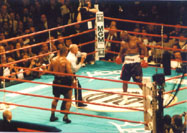

|
|
Last March (1999), in Venezuela, super bantamweight boxer Carlos Barreto died from head injuries received during a fight in which he was knockout cold. He was fighting fellow Venezuelan Jose Luis Valbuena in a title match. Barreto staggered to his corner after a series of vicious blows to the head from Valbuena, became unconscious and fell into a coma. To add insult to injury, Barreto was taken to three hospitals because the first two hospitals either lack the functioning equipment or could not confirmed that the family had enough money to pay for treatment and had to leave. Barreto was ranked number 5 by the World Boxing Association, he died at the aged of 23.
And as recently as two weeks ago another tragedy happen in the boxing ring, Stephan Johnson, 31, of Brooklyn, NY is clinging to life. He is unconscious and on a respirator because of a subdural hematoma and swelling on the left side of the brain. As in most cases where the brain as been bashed in by repeated blows, doctors had to drilled two holes in his skull to relieve pressure caused by swelling on the left side of his brain. He is laying in a coma. I was there for that fight, it was never showed on HBO because it was on the undercard of the Michael Grant vs Andrew Golota fight. Maybe it was a good thing that it wasn’t showed because both men took a severe beating. Stephan Johnson was fighting Paul Vaden for the vacant USBA junior middleweight title. In the 10th round both fighter were exchanging blows in the middle of the ring, when Vaden landed a thundering left hand. Johnson went down hard, his head slammed against the lower rope and his upper body hung over the apron. The medical doctors acted quickly, they strapped him to a stretcher with oxygen and rushed him to the hospital.
These were just three examples this year of boxers either dying or getting seriously hurt form the sport. In 1997, a Japanese boxer named Akira Taiga fell into a coma after getting knockout in a title match in Tokyo. The 23-year old Taiga was the 27th Japanese professional boxer to die from wounds inflicted in the ring since the commissioner’s office was set up in 1952.
The first major outcry for the banning of boxing was in 1982, South Korean Duk Koo-Kim died in the ring at Caesars Palace in Nevada, during his World Boxing Association championship loss to Ray Mancini. The whole world witness the killing. But it was the death of Jimmy Garcia aged 23, who suffered head injuries in an 11th round TKO loss to Gabriel Ruelas in May 18,1995 that made the Nevada State Athletic Commission to mandate new rules for safety.
Garcia was the last professional fighter to die as a result of injuries in Nevada, and he died in the same Caesars Palace ring that Duk Koo- Kim died in. Garcia died despite the best of medical foresight, including a ringside neurosurgeon who had him in the operating room within 35 minutes of his collapse in the ring. Marc Ratnec, the commission’s executive director said in a report " I believe in my heart we did everything right with Jimmy Garcia, but the boy still died. Hopefully we can learn something from it."
It is now accepted in medical circles that repeated heavy blows to the head cumulatively leads to a condition known as pugilistic dementia, or more commonly called punch-drunk. Most of the symptoms are similar to those of Parkinson’s disease and senile dementia. Physicians have observed that punch-drunkenness occurs more often in professionals than in amateurs and in boxers notorious for being to "take a punch", who are sluggers rather than tacticians.
The dangers of boxing is damage to the whole body. First of all, blows to the head causes the brain to move within the skull, damaging blood vessels, nerves and brain tissue. Acute brain haemorrhage ( bleeding into or around the brain) is the leading cause of boxing deaths. Once damaged the brain is increasingly susceptible to further damage. Boxing also causes physical damage to the retina and severe bruising around the eye leading, in some cases to loss of sight.
The nose appearance may be altered by the flattening of the bridge of the nose. The ears may be altered by injury and scarring. Rupture of the eardrum is a risk or if you are fighting Mike Tyson the chewing off of one’s ear is a danger. The breast or chest can be harm from hard body blows. Trauma to the chest can cause a condition called fat necrosis, where part of the tissue dies and scarring follows. Other injuries are facial cuts, fractured teeth and jaw, clots, wrist sprains, rib fracture and other bone injuries. I don’t think most coaches or trainers are willing to give out that type of information to the many young men entering boxing as a profession.

On the other hand the Proponents of boxing will cite numbers to support the notion that the sport is relatively harmless. The American Medical Association Council on Medical Affairs list the annual number of boxing deaths at 0.13 per 1,000 participants, not out of line with other high-risk sports such as motorcycle racing, parachuting or hang gliding. From 1986 to 1992 while one man was killed as a consequence of boxing, 82 met their deaths participating in air sports such as parachuting and flying. 28 fell victim to athletics, 46 died as consequence of ball games, 31 horse riding, 87 in motor sports, 65 while mountain climbing, 20 in bicycling or racing and 412 in water sports.
Sam Hickman is a boxing coach from Philadelphia who have helped coached seven countries in the Olympics and have started three Olympic camps, two in Africa and one in India. He has strong views on boxing.
" I love boxing. The art of boxing is a scientific sport. It’s all a science. You begin to learn how you can or can’t move your body in the ring. How you can delivered certain shots from different angles without getting hit. You learn the ability to use your feet to slipped in and out of position. If you have a good coach or trainer, they should teach you the fundamentals. But in a lot of cases if a fighter gets knockout in a fight. Instead of having a CAT scan and taking two or three months off, they are back in the gym sparing after five or ten days. It’s the responsibility of the trainers to get the education and enforced safety measures to keep those fighters out of the ring" Said Hickman.
" Are they going to ban football, hockey or soccer? I don’t think so! Boxing is a great sport. Fighters do get hurt in this game, but you know that when you entered this sport. I got shook and hurt bad by George Forman, but that’s part of the game. You hit your opponent on the chin and put him to sleep. I think one of the ways to make boxing more safe, is to get more qualified and competent coaches and trainers. They make a big difference in protecting their fighters. I also heard that the boxing commission wanted to used headgear in protecting the head. But headgear won’t make any difference at all. If you hit the guy on the chin, what are you going to do? Pad his chin too?" Said Frazier.
Gerald McClellan sits in a wheel chair, blind, hard of hearing, his short term memory is shot. He has three kids that he can never play with. He has three sisters who watches, feeds him and helps him throughout the day. McClellan was a former middleweight champion, and in 1995 rising to become the best pound for pound fighter in the world. McClellan and Roy Jones was on a collision course to a Superfight in 1996. Two young, handsome and gifted fighters at the top of their game was going to make millions. Unfortunately that day never came. Gerald McClellan fought England’s Nigel Benn in February of 1995. The fight was held in London, in a dark and eerie arena.
In the first round Gerald knocked Benn through the ropes and out of the ring, he was able to get back into the ring after a long count by the home referee. The fight itself was brutal. Both men took tons of punishment. Benn went down again in the eighth round but got back up. By the tenth round McClellan was blinking constantly, something was wrong. During that round McClellan was taking a lot of punches and he took a knee twice, the second time for a 10 count. The fight was over. Back in the second round McClellan complained to his corner that something wasn’t right. He didn’t feel well. After the fight, Gerald McClellan whose nick name was the G Man collapsed and felled into a coma. This man was in his prime 28 years old, he was a soft-spoken and caring man. It made me sick watching that fight on ShowTime. Surgery was immediately conducted to remove a blood clot from his brain. When he came out of his coma, Gerald was never the same, his whole world was destroyed.
The next time I saw Gerald McClellan was in November 09,1995. I drove up with Joe Frazier to Freeport, Illinois that’s where Gerald and his family lived. We were there for a benefit to raised money for his medical expenses. Evander Holyfield was also there to lend his support and money. I stayed three days meeting the family and finally Gerald McClellan himself. He was in a wheelchair, with his eyes closes. He was sitting next to a large poster of himself in his prime, slim and muscular, wearing his championship belt around his waist and striking a boxing pose.
It was a stunning picture. Soon Joe Frazier walked over and kneel down, grabbed his hand a whisper in his ear " You will always be a champion. Stay strong and keep your hands, in the lords hands." Gerald flashed a big smile and that’s when I snapped the picture. I have to say at that moment, I almost cried, because it didn’t have to end this way for a great and talented man!
Boxers are dying in the ring!
Is boxing getting too brutal and should be it be banned? The fact that boxing is dangerous is beyond question. Neurosurgeons have calculated that a bout involves a boxer’s skull being repeatedly pounded with a force of a 10lb hammer at speeds of up to 20 mph. And blows to the head always cause some brain damage, even if it is too slight to detected at the time. Boxing is one of the few sports in which the primary goal is to render the opponent unconscious, causing a concussion, or inflict brain damage.
The dangers of boxing
Popular heavyweight boxer Jerry Quarry, who fought former champions Floyd Patterson and Muhammad Ali is a good example of a slugger who took more blows than what he gave out. Quarry suffered from "dementia pugilistica" a type of brain damage that resembles Alzheimer’s caused by repeated blows to the head. He died at the early aged of 53. Reportedly 9% to 25% of professional boxers eventually become punch drunk.
Joe Frazier wants skilled officials
Former world heavyweight boxing champion, Joe Frazier doesn’t want to see a ban on boxing.
A warrior is cripple for life!
" In boxing you are going to war, and in war you must be prepared to die" Gerald McClellan February 23rd 1995. ( Two days prior to the Nigel Benn fight)